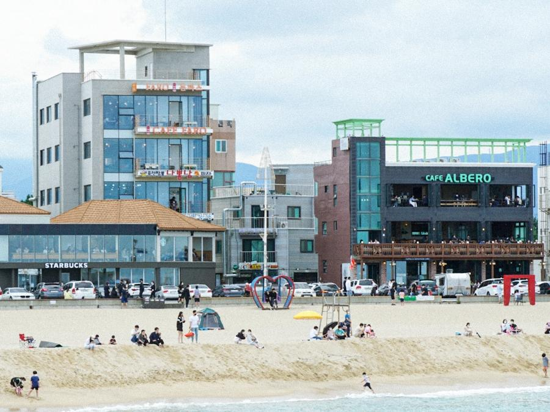
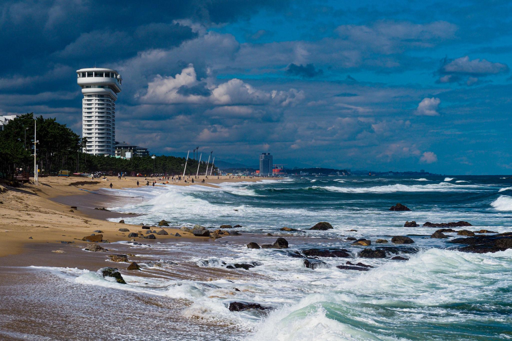

ESFJ 추천 여행지
강원도 강릉


추천 이유
ESFJ는 사람들과 함께 시간을 보내고 따뜻한 추억을 만드는 것을 좋아합니다. 강릉은 바다와 카페, 맛집과 문화 공간이 조화를 이루는 여행지로 가족이나 친구와 함께 편안하고 즐거운 시간을 보내기에 적합합니다.
추천 여행 코스
- 아르떼뮤지엄 강릉
- 동화가든
- 안목해변 & 강릉 커피거리
- 강릉중앙시장
- 오죽헌
- 사근진해변
- BTS 버스정류장
추천 포인트
- 바다와 감성 카페를 함께 즐길 수 있음
- 맛집과 시장 탐방 가능
- 가족·친구와 함께 여행하기 좋음
- 힐링과 관광을 모두 경험할 수 있음